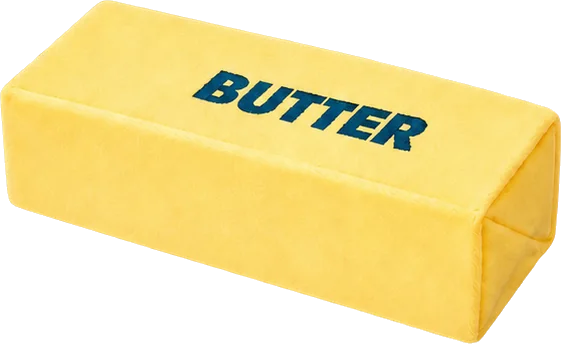
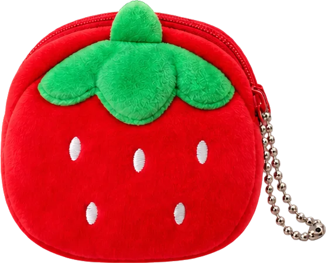
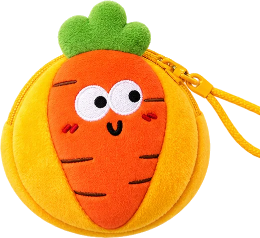
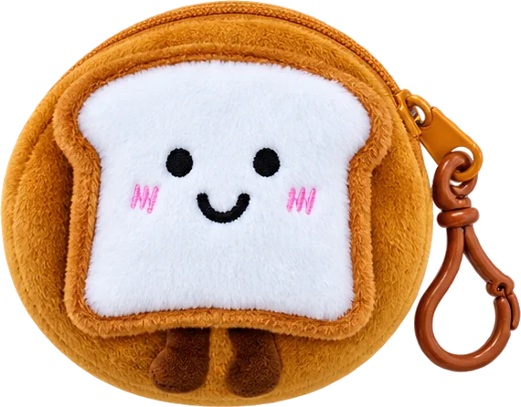

MUMUTORI / OPENING WORKSPACE
오늘 할 일
다음 할 일 · 담당은 수정 가능다다희
둘이 결정할 것 7건
자리별로 자료와 할 일을 모아요
매장 자리별 제작물
외부 간판
X 옆 사각 프레임을 쓰는 제안. 간판 도안은 확정 전.
프레임 실측 필요
결정 대기 · 간판 채택·문구·서체·배치
다음 할 일 · 간판 위치·크기 확인 후 도안 요청
제작물 폴더 ↗셔터 현수막
현수막 제작은 확정. 문구는 다희 제안 단계.
셔터·현수막 실측 필요
결정 대기 · ‘귀여움이 우주를 구한다’ 문구 확정 여부
다음 할 일 · 문구 확인 후 인쇄용 원본 넣기
제작물 폴더 ↗유리벽
유리 윗부분 시트지 등 제작물을 이 칸에 모읍니다.
유리 폭·높이 실측 필요
결정 대기 · 시트지 채택·도안
다음 할 일 · 부착할 부분 실측·사진 넣기
제작물 폴더 ↗가운데 테이블 · 식탁보
매대 A·B 앞뒤 결합. 식탁보 제작 예정. 버터 벽돌은 취소.
A·B 각 1600×600×850mm / 합계 1600×1200×850mm
결정 대기 · 식탁보 색·천·길이
다음 할 일 · 식탁보 색·천·내려오는 길이 고르기
제작물 폴더 ↗MORE ARCH 수납장
2개. 입구 안쪽 왼쪽 · 안쪽 오른쪽 벽 앞. 위 상자 사선 배치는 나중에 검토.
각 1200×315×800mm · 2개
결정 대기 · 상자 사선 배치 미정 · 나중에
다음 할 일 · 수납장 위치·통로 확인
제작물 폴더 ↗원래 청록 테이블
기존 청록 테이블을 입구 기준 오른쪽 앞 벽쪽으로 이동.
기존 가구 · 실측 필요
결정 대기 · 버터 시트지 채택 미정
다음 할 일 · 이동 후 사진·실측 넣기
제작물 폴더 ↗카운터
기존 카운터 유지. 파란 면에 버터 시트지 적용은 미정.
실측 필요
결정 대기 · 버터 시트지 채택 미정
다음 할 일 · 필요한 안내물·부착면 정리
제작물 폴더 ↗그 외 필요한 자리
새로 필요한 자리와 제작물을 여기에 적습니다.
미정
결정 대기 ·
다음 할 일 · 필요한 제작물·자리 적기
제작물 폴더 ↗자료 · 확정 기록
도면 원본은 그대로 보관해요도면 · 실측 원본 ↗팔시보 도면 및 실측자료실측 · 배치 요약 ↗원본·확정·미확인 구분제작물 전체 폴더 ↗인쇄용 원본 · 시안 · 사진10/27 배치 확정 기록 ↗현수 전달 기준
10/27 14:55 최신 결정
11/1 오픈 · 중앙 1600×1200×850mm + 식탁보 제작 예정 · 버터 벽돌 취소 · 현수막 제작 확정. 식탁보 색·천·길이, 현수막 문구, 버터 시트지, 상자 사선 배치, 간판 도안은 미정 또는 확인 필요입니다.
두 사람 AI가 같이 쓰는 법
자세한 안내 ↗- 현재 내용을 읽어요
이 페이지의 칸 ID·확정 내용·결정 대기를 확인해요. 실시간 내용은 공유 링크 화면에서 ‘AI에게 현재 내용 복사’를 사용해요.
- 맞는 자리에 파일을 넣어요
각 칸의 ‘제작물 폴더’에 인쇄용 원본·시안·사진을 넣어요. 제안 파일은 파일명에 ‘제안’을 표시해요.
- 바꿀 내용을 요청해요
요청/에 칸 ID, 현재값 → 새값, 파일 링크, 요청자와 결정 근거를 적어요. 담당이 반영하고 결과/에 남겨요.
공유 폴더 자동 내보내기: 연결 대기. 초기 기준 파일 ↗ 지금은 현재상태 파일을 받아 제작물/의 페이지_현재상태.md를 갱신할 수 있어요.
AI가 읽을 현재 페이지 텍스트
다른 기기에서도 준비 기록 이어쓰기
공유 링크를 확인하고 있습니다. 로그인은 필요하지 않습니다.
전용 공유 링크를 열면 로그인 없이 체크리스트·분류·준비물·예산·메모·오픈일을 함께 수정합니다. 링크를 받은 사람은 기록을 보고 수정할 수 있습니다. 다른 기기의 변경도 자동으로 반영되며, 함께 수정한 내용이 겹치면 이어 쓸 기록을 선택합니다.NOTE / BACKUP
함께 남기는 노트
기존 준비 노트와 전체 백업을 그대로 이어갑니다. 제작물별 내용은 위의 해당 칸에 적어 주세요.
이 브라우저에 저장됩니다.로그인 없이 링크로 공동 작업 · JSON 백업 지원
기존 초안의 JSON도 가져올 수 있습니다. 페이지 주소가 바뀌면 기존 기록은 자동으로 이동하지 않으므로, 이전 페이지에서 내보낸 JSON을 가져오세요.
이전 준비표 · 사진 · 시안 기록
과거 안을 보존한 기록입니다. 현재 확정 사항은 위 자리별 제작물 칸을 우선합니다.
01 / UPDATED DECISIONS
카운터는 그대로.
버터와 편지는 새롭게.
2026.10.11~12 변경 반영
메인 매장만 작게 · 버터 집기 설치 확인 · 11/1(일) 오픈
- 후면 계단 아래 카운터와 그곳의 기존 집기 유지
- 중앙 테이블과 벽면 진열 집기를 모두 버터 집기로 교체
- 상판과 하단은 동일한 사각형, 한눈에 보이는 버터 덩어리
- 아래 은색 포장지, 위로 올라온 버터가 흘러내리다 굳은 모습
- 기존 벽면 우드·조명 유지, 상단 흰 벽에 버터 드립 도장
별도 벽면 한쪽에 타자기·레터 작성 공간, 바로 옆 우편함— 이전 안(10/11 변경)작성·투입·결제 후 다음날 전량 집계·타자기 인쇄·우편 발송— 이전 안, 레터서비스는 온라인으로- 홍대·연남동 소품상점 분위기의 간판과 입구 스탠드 배너
- 10/11 메인 매장만 작게 운영 — 안쪽은 온라인 전용 재고창고·작업실(직원만), 매장 레터 코너·우편함·외부 포토존 없음
- 10/11 가운데 버터 테이블은 기존 테이블만큼 크게(약 200×60cm), 제작 방식은 견적 후 결정
- 10/11 버터 집기 설치 목표 10/27 · 전체 오픈 목표 10/31
- 중앙은 낮은 상품 진열로 버터 블록과 포장지의 실루엣 강조
- 은색 접힘 마감에 크림색 종이 가장자리와 작은 도토리 포인트
레터 코너는 옆 벽의 버터 콘솔, 우편함은 손이 닿는 인접 위치— 이전 안- 정면·돌출간판·배너의 글자 기준선, 자간, 여백을 하나로 정돈
원고·고객 보관표·결제를 접수번호로 대조하는 방식 검토— 이전 안- 오른쪽 벽은 거울과 키링 행거, 창가에는 모듈 테이블 2개
제작 재료·예산·상품 구색은 미확정입니다. 레터 규격·가격은 온라인 레터서비스에서 정합니다.
건물주 사용 동의 요청은 기존 임차인 담당입니다. 무무토리 사업자 주소는 그대로 두고 공간을 3개월 팝업으로 이용하는 방향입니다.
INTERACTIVE SPACE / 3D
돌려 보고, 놓아 보는 무무토리.
후면 계단과 기존 카운터는 유지합니다. 은색 포장지 위 버터 집기에 실제 판매했던 소품을 놓고, 오른쪽 벽은 거울과 키링 행거, 창가에는 모듈 테이블 2개를 둡니다. 뒤 통로 안쪽은 온라인 전용 재고창고·작업실(직원만)이며, 매장 레터 코너·우편함과 외부 포토존은 두지 않습니다.
회전·확대로 진열과 동선을 살펴보세요. 제품 사진은 첨부한 기존 레퍼런스에서 가져왔으며, 집기·공간 비례는 실측 전 제안입니다.
02 / BEFORE & AFTER
같은 공간, 새로운 장면.
Drive ‘팔시보 스토어’ 사진 9장 확인
2026.10.03 기준 · 실측 전
실제 사진과 생성 이미지를 나란히 봅니다. 전면 유리·왼쪽 출입문·벽면 우드·기존 조명·후면 계단을 기준으로 제작했습니다. 생성 과정에서 세부 형태가 달라질 수 있으며, 3D 이미지는 사진으로 추정한 공간 관계를 보여 줍니다. 치수 도면이나 편집 가능한 3D 모델은 아닙니다.
현재의 팔시보스토어
큰 중앙 테이블, 양쪽 우드 벽, 계단 아래 카운터가 보입니다.
누가 봐도 버터인 상점
중앙·벽면은 은색 포장지 위 사각 버터. 카운터는 기존 그대로, 편지는 옆 벽에서.
간판 교체 위치 확인
정면 글자와 돌출간판을 함께 바꾸되 환기구·유리·출입문은 가리지 않습니다.
골목에서 자연스럽게 눈에 띄도록
간판의 여백과 글자 간격을 정돈하고, 입구 배너까지 크림·갈색·도토리로 연결한 제안.
진열·레터·카운터를 나눈 배치
중앙·벽면 진열 → 옆 벽에서 편지 작성·투입 → 기존 카운터 결제. 다음날 직원이 집계·인쇄·발송합니다.
사진에서 확인한 공간
- 거리에서 볼 때 왼쪽 출입문과 넓은 전면 유리
- 높게 올라오는 우드 패널과 좁은 상단 흰 벽
- 흰 레일 조명·천장형 냉난방기·노출 배관
- 후면 계단 하부의 기존 우드 카운터
- 측면 개구부, 기존 금속 진열대
벽 길이, 높이, 통로 폭과 설비 위치는 현장 실측으로 확정합니다.
A BLOCK OF BUTTER
포장지를 열자,
버터가 올라오는 모습.
상판과 하단의 사각 윤곽을 맞추고 덩어리감을 유지합니다. 녹은 표현은 두꺼운 옆면에서 시작해 은색 포장지 위로 흘러내리다 멈춥니다.
- 상판 평평한 사각형 진열면
- 몸체 연한 버터색의 두꺼운 블록과 굳은 드립
- 하단 펼친 은색 포장지, 크림·도토리 포인트 제안
- 벽면 같은 형태를 얕은 진열 집기로 적용
실제 은박 재료 사용은 미확정입니다. 손에 닿는 면·청소·내구성을 확인할 마감 샘플을 먼저 만듭니다.
CURATED LITTLE THINGS
작고 귀여운 것들을 함께.
무무토리는 다양한 사입 상품을 고르는 소품상점입니다. 기존에 판매했던 과일·채소 키링, 동전지갑, 말랑이를 버터 매대 위에 섞어 놓았습니다.




상품 사진은 다시 첨부해 주신 레퍼런스 기준입니다. 현재 재고·사입 수량·판매 가격은 별도로 확인한 뒤 준비물 관리에 반영합니다.
03 / DESIGN BRIEF
같은 버터, 다섯 가지 장면.
간판과 배너, 같은 간격과 여백
홍대·연남동 골목의 작은 소품상점처럼 따뜻하고 차분하게. 크림 바탕에 짙은 갈색 ‘무무토리’를 중심으로 도토리와 ‘소품상점’을 배치하고, 로고·글자의 기준선과 여백을 맞춥니다.
- 배너 제안
- 입구 옆 스탠드에 도토리, ‘무무토리 소품상점’, ‘편지를 남기는 곳’을 짧게 배치
- 확인할 것
- 정면·돌출간판의 실제 크기, 자간·줄 간격·좌우 여백, 환기구 간섭, 배너의 설치 위치·고정·출입 동선
- 담당·선행
- 무무토리 / 업체 미정 · 기존 임차인 동의 확인 → 실측 → 통합 시안·제작 원본 승인
상판부터 하단까지, 사각 버터
중앙과 벽면 집기를 모두 상하단이 같은 사각형인 버터 블록으로 바꿉니다. 평평한 상판 아래 두꺼운 버터 몸체가 있고, 펼친 은색 포장지 위로 흐르다 굳은 옆면을 표현합니다.
- 마감 제안
- 구조체 + 버터색 조형·도장, 접힌 포장지의 은색 마감. 종이 가장자리는 크림색과 작은 도토리로 연결
- 확인할 것
- 상하단 사각형의 일치, 진열 면적·하중·반입구·통로, 은색 접힘 모서리와 청소·내구성 샘플
- 담당·선행
- 무무토리 승인 / 제작 업체 미정 · 실측 → 형상·마감 샘플 → 도면·견적 → 제작
우드·조명·카운터는 그대로
후면 계단 아래 카운터와 기존 집기를 유지합니다. 벽면 우드와 조명도 살리고, 우드 상단의 흰 벽 안에서만 버터 드립 페인트를 적용합니다.
- 도장 제안
- 크림 바탕과 연한 버터색 무광. 실제 조명 아래에서 색과 드립 패턴을 비교
- 확인할 것
- 카운터·집기·우드·조명·바닥 보양, 벽 바탕, 드립 경계, 건조·환기
- 담당·선행
- 무무토리 / 시공 담당 미정 · 보존 범위 기록 → 도장 동의·샘플 → 보양·작업
버터를 가리지 않는 진열
중앙은 사입한 과일·채소 키링, 동전지갑과 말랑이를 낮게 놓아 버터 덩어리가 보이게 합니다. 벽면도 같은 버터 집기로 교체하고, 다양한 소품을 상품군별로 채웁니다.
- 진열 제안
- 미니어처·문구·봉제 소품과 낮은 트레이. 실제 판매 상품과 장식·샘플은 구분
- 확인할 것
- 가격표, 실제 SKU·수량, 진열 안정성, 보충 수납. 작성면과 우편함 앞을 비우기
- 담당·선행
- 무무토리 · 상품 선정 → 버터 집기와 트레이 규격 확인 → 샘플 진열
옆 벽에서 쓰고, 우편함에 남기기 — 하지 않음
별도 벽면 한쪽에 타자기와 고객 작성 공간을 둡니다. 바로 옆 우편함에 원고를 넣고 기존 카운터에서 결제합니다. 다음날 직원이 전량 집계해 타자기로 인쇄한 뒤 우편으로 발송합니다.
- 배치 제안
- 얕은 벽면 버터 콘솔 위 타자기·작성 도구·규격 안내, 손이 닿는 옆 위치에 우편함
- 확인할 것
- 장비·한글·급지 시험, 종이 규격·글자 수·가격, 원고와 결제 대조, 수거·집계 마감·휴무일·발송 절차
- 담당·선행
- 무무토리 · 장비·규격 시험 → 벽면·우편함 실측 → 다음날 처리 모의 시험 → 안내판
2026.10.11 변경 · 매장 레터 코너·우편함은 두지 않습니다. 안쪽 공간은 온라인 전용 재고창고·작업실로 씁니다. 아래 레터 흐름은 이전 안이며, 레터서비스는 온라인 운영 기준으로 다시 정합니다.
LETTER SERVICE / CONFIRMED FLOW
오늘 남긴 편지,
다음날 타자기로.
고객은 원고를 남기고 결제합니다. 직원은 다음날 전량 집계해 인쇄·우편 발송을 진행합니다.
- 01 · 고객
규격에 맞게 작성
벽면 작성 공간에서 안내된 양식으로 편지를 작성합니다.
- 02 · 고객
옆 우편함에 투입
작성한 원고를 바로 옆 우편함에 넣습니다.
- 03 · 고객
카운터에서 결제
기존 카운터에서 레터서비스를 결제합니다.
- 04 · 다음날 직원
전량 수거·집계
접수분을 모두 집계하고 원고와 결제 내역을 맞춥니다.
- 05 · 직원
타자기로 인쇄
정해진 규격으로 인쇄하고 내용·봉함 상태를 확인합니다.
- 06 · 직원
우편으로 발송
발송 정보를 확인해 우편 발송하고 처리 상태를 남깁니다.
원고와 결제를 같은 번호로
원고·고객 보관표·결제 기록에 동일한 접수번호를 쓰는 방식을 검토합니다. 다음날 미결제·중복·취소 원고를 구분하기 위한 제안이며 아직 채택 전입니다.
규격과 처리 기준
용지 크기·글자 수·가격·집계 마감·휴무일 처리·발송 서비스와 요금 구조는 실제 타자기 시험과 운영 검토 후 정합니다.
이 페이지는 공간과 운영 준비를 관리합니다. 실제 고객의 편지 본문이나 수신주소를 입력하는 접수 화면은 별도로 만들지 않았습니다.
04 / BRAND SOURCES
현재 홈페이지에서 가져온 기준.
도토리 로고 · 원본 일치 확인
2026.10.03 홈페이지가 사용 중인 이미지와 Drive ‘무무토리로고.png’의 픽셀을 대조해 동일함을 확인했습니다. 과거 Illustrator 파일은 최신 제작 원본으로 채택하지 않았습니다.
홈페이지 소품상점 배너의 따뜻한 우드와 귀여운 미니어처를 분위기 기준으로 사용합니다. 배너 속 상점은 실제 팔시보 사진이 아닙니다.
홈페이지 색상과 공간의 버터색
앞의 세 색은 현행 홈페이지 설정에서 확인했습니다. 마지막 버터색은 도료 샘플용 제안입니다.#EFE9E4
기본 배경#6A3906
기본 글자#FDE9BE
보조 바탕#EBCF79
버터 제안
기본 배경#6A3906
기본 글자#FDE9BE
보조 바탕#EBCF79
버터 제안
상품 확인 범위 홈페이지의 바이올린 미니어처와 첨부 레퍼런스의 기존 판매 소품 16종을 확인했습니다. 과일·채소 키링, 동전지갑, 버터 말랑이를 진열 예시로 반영했습니다. 현재 재고·사입 수량·가격·최종 오프라인 판매 구성은 별도로 확인합니다.
준비 기록 체크리스트와 메모는 이 브라우저에 저장됩니다. 같은 공유 링크를 열면 로그인 없이 함께 이어 쓸 수 있습니다. 중요한 기록은 JSON 파일로도 백업하세요.
PLAN / 11월 1일 일요일 오픈
자료 → 목업 → 함께 확인.
DO / 현수 · 다희
둘이 나눠 준비해요.
현수 · 다희 · 둘이, 담당을 골라 남은 일을 확인해요. 준비물의 결정·수량·사진은 매장 준비 목록에서 이어갑니다.
카드 단말기 서류 · 끝
✓ 서류·신청 완료 · 10/26 사장님 확인
끝 · 이전 서류 안내와 기록 펼치기
CARD TERMINAL / DOCUMENTS
카드 단말기 서류 · 이전 안내
카드 단말기(포스모스) 가맹 등록에 필요한 서류입니다. 아래를 준비해 포스모스 카카오톡 채널 1:1 채팅으로, 대표자 성함·연락처와 함께 보냅니다. 가맹 등록은 접수일을 빼고 3~5일(카드사 9곳 등록에 3~4일) 걸리니 10/23(금)까지 보내야 오픈에 맞출 수 있는데, 10/14에 보냈습니다.
올리지 않고
체크만 합니다.
10/14 당시 기록: 서류 보냄 · 개통 대기 — 보낸 것 7가지 · 해당 없음 1가지 · 체크는 쓰시던 공유 링크로 연 실행 체크리스트의 ‘카드 단말기 서류’ 칸에서 합니다.
서류 8가지7개 보냄 · 1개 해당 없음
① 신분증
보냄(10/14)
② 간판 사진 1장
도로명 표지판 사진으로 대신할 수 있습니다.
보냄(10/14)
③ 외부 사진
문을 열어 실내가 보이게 찍습니다.
보냄(10/14)
④ 실내 사진 2~3장
보냄(10/14)
⑤ 영업신고증
음식점만 해당합니다. 무무토리는 해당 없음.
해당 없음
⑥ 사업자등록증
액자에서 꺼내서, 빛 반사 없이 찍습니다.
보냄(10/14)
⑦ 통장 사본
사업자 통장으로 준비합니다. 어느 통장으로 할지는 정했습니다(10/14).
보냄(10/14)
⑧ 이메일
이메일 주소를 함께 적어 보냅니다.
보냄(10/14)
알아 둘 것
당시 안내 가맹 등록은 접수일을 빼고 3~5일 걸립니다. 개통 연락이 오면 결제·취소를 한 번씩 시험합니다.
사업자 종류 법인 사업자라면 서류를 보내기 전에 포스모스에 먼저 말해야 합니다. 무무토리는 개인사업자 기준입니다.
09 / NEXT REVISION
다음 수정도,
이 기준에서 이어서.
프롬프트를 복사해 다음 대화에 붙여 넣으세요. 바꿀 부분을 아래에 적으면 복사할 때 함께 붙습니다.
확정 사항을 유지하며 이미지와 페이지를 함께 수정하도록 정리했습니다.
이미지를 다시 만들 때는 원사진·현행 로고·이 페이지의 최신 시안을 함께 첨부하세요. 실제 생성에 사용한 프롬프트는 이미지 프롬프트 파일에서도 확인할 수 있습니다.